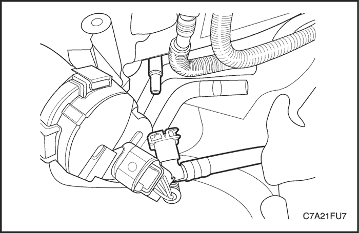
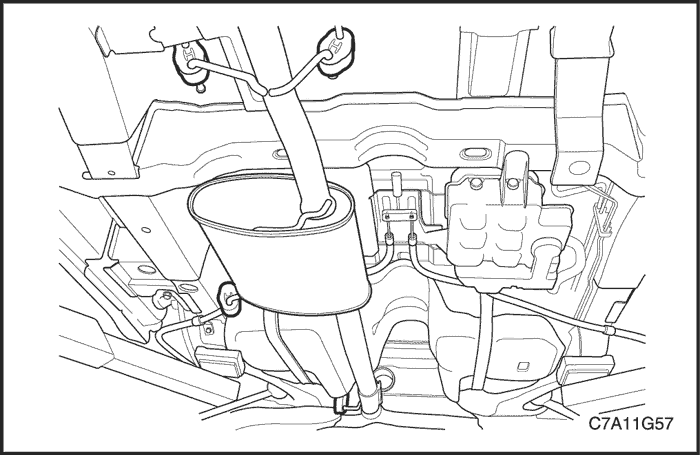
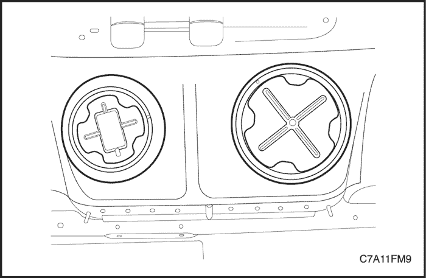
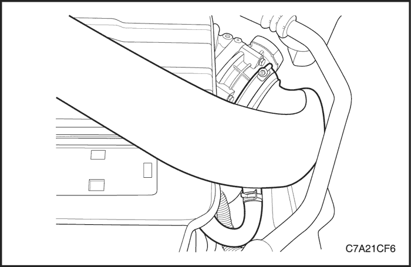
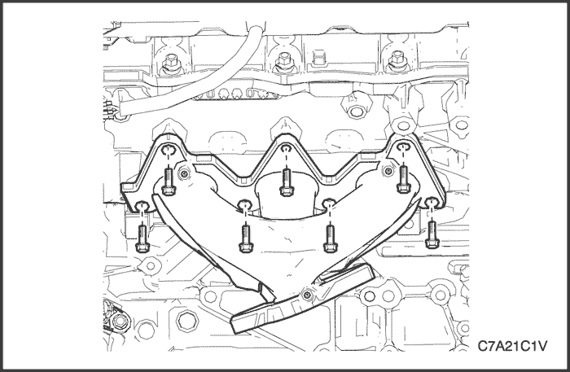
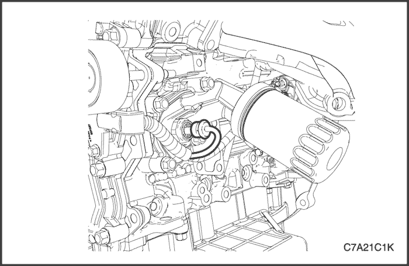
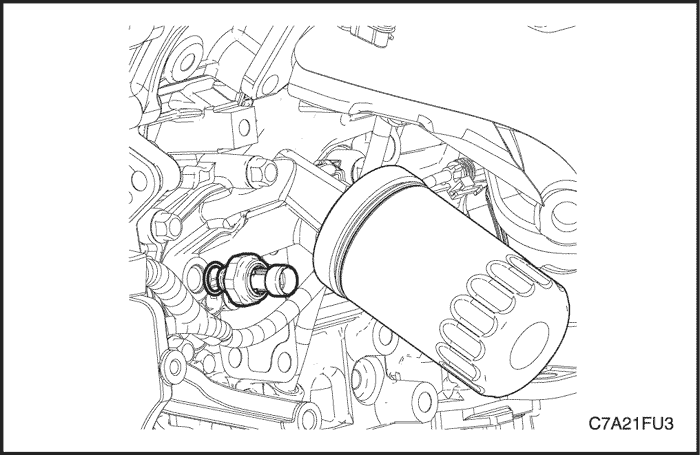
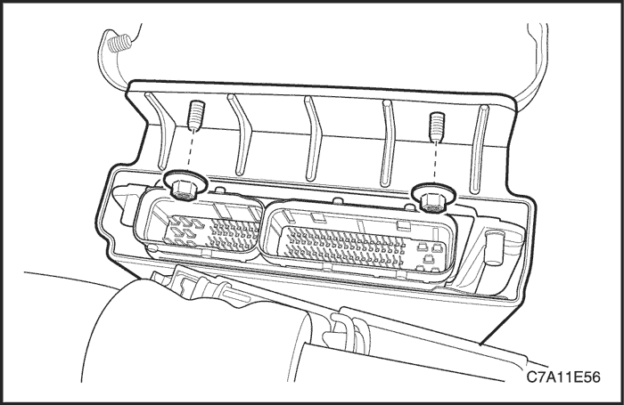

MANTENIMIENTO Y REPARACIÓN
SERVICIO EN VEHÍCULO


Alivio de presión del sistema de combustible
Procedimiento
Precaución: El sistema de combustible está sometido a presión. Para evitar derrames de combustible y el riesgo de lesiones personales o de incendio, es necesario liberar la presión del sistema de combustible antes de desconectar las tuberías de dicho sistema.
- Quite el tapón del depósito de combustible.
- Desmonte de la caja de fusibles del motor el fusible de la bomba de combustible.
- Ponga en marcha el motor y déjelo que se cale.
- Siga arrancando el motor durante otros 10 segundos.

Prueba de presión de combustible
Procedimiento de comprobación
Precaución: El sistema de combustible está sometido a presión. Para evitar derrames de combustible y el riesgo de lesiones personales o de incendio, es necesario liberar la presión del sistema de combustible antes de desconectar dicho sistema.
- Libere la presión del sistema de combustible. Consulte el apartado "Descarga de presión del sistema de combustible" de esta sección.
- Desconecte la tubería de alimentación de combustible de la rampa de inyectores.
- Conecte el conector del manómetro de presión de combustible a la rampa de inyectores.
- Conecte el conector del manómetro de presión de combustible al tubo de alimentación.
- Compruebe que no haya una fuga de combustible.
- Consulte el manómetro de presión de combustible. La presión de combustible normal debe estar en el intervalo 402 ~ 418 kPa (58,3 ~ 60,6 lbs/pulg2).
- Libere la presión del combustible.
- Quite el manómetro de presión de combustible.
- Conecte la tubería de alimentación de combustible a la rampa de inyectores.
- Encienda el motor y verifique que no haya una fuga de combustible.

Depósito de combustible
Procedimiento de desmontaje
Precaución: No permita furmar ni el uso de llamas desnudas en el área donde se trabaja con el combustible o el sistema EVAP. Siempre que trabaje con el sistema de combustible, desconecte el cable negativo de la batería, excepto en el caso de pruebas en las que se necesite tensión de la batería.
Precaución: El sistema de combustible está sometido a presión. Para evitar derrames de combustible y el riesgo de lesiones personales o de incendio, es necesario liberar la presión del sistema de combustible antes de desconectar las tuberías de dicho sistema.
- Desconecte el cable negativo de la batería.
- Vacíe el depósito de combustible. Asegúrese de que el nivel de combustible en el depósito sea inferior a una cuarta parte. Si es necesario, vacíe el depósito de combustible hasta este nivel.
- Libere la presión del sistema de combustible. Consulte el apartado "Descarga de presión del sistema de combustible" de esta sección.
- Levante y sujete el vehículo.
- Desmonte el silenciador delantero. Consulte la Sección 1G3, Sistema de escape del motor - HFV6 3.2L.
- Desmonte el módulo de tracción trasera (RDM) y el eje propulsor. Consulte la Sección 3B, Árbol de transmisión trasero.
- Desenchufe el conector de la bomba de combustible situada en la parte trasera derecha del depósito de combustible.
- Desconecte el tubo de llenado del depósito de combustible, el manguito de ventilación EVAP y el manguito de vapor del depósito de combustible.
- Desconecte el tubo de alimentación de combustible situada cerca de la parte delantera derecha del depósito de combustible.
- Desconecte el tubo de vapor de combustible de la caja de emisión EVAP.

- Apoye adecuadamente el depósito de combustible.
- Quite los tornillos del soporte de apoyo de los cables del freno de estacionamiento y extráigalos del depósito de combustible.
- Quite las tuercas de fijación de las abrazaderas del depósito de combustible.
- Quite las abrazaderas del depósito de combustible.
- Baje despacio el gato y incline hacia abajo la bomba de combustible mientras coloca la parte trasera de la bomba de combustible hacia arriba.
- Desmonte el depósito de combustible.
procedimiento de montaje
- Instale el depósito de combustible en la posición previa.
- Monte las abrazaderas del depósito de combustible.
Apretar
Apriete las tuercas de fijación de las abrazaderas del depósito de combustible hasta 20 N•m (15 lb-pie).
- Monte los tornillo del soporte de los cables del freno de estacionamiento.
- Conecte el tubo de vapor de combustible a la caja de emisión EVAP.
- Conecte el tubo de entrada de combustible situada cerca de la parte delantera derecha del depósito de combustible.
- Conecte el tubo de llenado del depósito de combustible, el manguito de ventilación EVAP y el manguito de vapor al depósito de combustible.
- Conecte el conector del cableado de la bomba de combustible situada en la parte trasera derecha del depósito de combustible.
- Monte el soporte de los cables del freno de estacionamiento. Consulte la Sección 4G, "Freno de estacionamiento".
- Monte el silenciador delantero. Consulte la Sección 1G3, Sistema de escape del motor - HFV6 3.2L.
- Instale el eje propulsor y el RDM. Consulte la Sección 3B, Árbol de transmisión trasero.
- Llene el depósito de combustible.
- Conecte el cable negativo de la batería.
- Efectúe una comprobación de fugas en el depósito de combustible y las conexiones de las tuberías de combustible.

conjunto de la bomba de combustible
Herramientas necesarias
Extractor/Instalador de los mazos de tubos del evaporador de la bomba de combustible principal EN-48279.
Extractor/Instalador de los mazos de tubos del evaporador de la bomba de combustible secundaria EN-48278.
Procedimiento de desmontaje
Precaución: El sistema de combustible está sometido a presión. Para evitar derrames de combustible y el riesgo de lesiones personales o de incendio, es necesario liberar la presión del sistema de combustible antes de desconectar las tuberías de dicho sistema.
- Libere la presión del sistema de combustible. Consulte "Alivio de presión del sistema de combustible"
- Desconecte el cable negativo de la batería.
- Pliegue el asiento trasero.
- Levante la moqueta y el aislante.
- Extraiga las tapas de acceso a las bombas de combustible principal y secundaria.
- Desenchufe el conector eléctrico del conjunto de la bomba de combustible secundaria.
- Instale el extractor/instalador de los mazos de tubos del evaporador de la bomba de combustible EN-48278 en la bomba de combustible secundaria y gírelo en sentido contrario a las agujas del reloj.
- Saque las mazos de tubos del evaporador de la bomba de combustión.
Aviso: Tenga cuidado en no dañar el transmisor de combustible para el correcto nivelado de combustible cuando extraiga el conjunto de la bomba del depósito.
- Saque el conjunto de la bomba de combustible secundaria y la junta tórica del depósito.
Aviso: La junta tórica no debe estar contaminada con combustible.
- Desmonte manguito que conecta la bomba principal a la secundaria de la bomba secundaria.
- Desenchufe el conector eléctrico del conjunto de la bomba de combustible principal.
- Desconecte el tubo de alimentación de combustible.
- Instale el extractor/instalador de los mazos de tubos del evaporador de la bomba de combustible principal EN-48279 en la bomba de combustible principal y gírelo en sentido contrario a las agujas del reloj.
- Saque las mazos de tubos del evaporador de la bomba de combustión principal.
Aviso: Tenga cuidado en no dañar el transmisor de combustible para el correcto nivelado de combustible cuando extraiga el conjunto de la bomba del depósito.
- Saque el conjunto de la bomba de combustible principal y la junta tórica del depósito.
Aviso: La junta tórica no debe estar contaminada con combustible.

procedimiento de montaje
- Limpie toda la superficie de acoplamiento de ambas bombas y del depósito de combustible.
Aviso: Para facilitar el montaje de el manguito de conexión entre ambas bombas, instale primero el conjunto de la bomba de combustible principal.
Aviso: Asegúrese de que la flecha en el conjunto de la bomba de combustible principal esté alineada con la flecha en el depósito.
Aviso: Tenga cuidado en no dañar el transmisor de combustible para el correcto nivelado de combustible cuando instale el conjunto de la bomba en el depósito.
Precaución: No reutilice la junta tórica de la bomba de combustible principal.
- Coloque la nueva junta tórica de la bomba de combustible principal y la bomba principal en el depósito en la misma posición en que las encontró.
- Empuje el manguito de conexión de ambas bombas hacia el conjunto de la bomba secundaria.
- Conecte el manguito de conexión de ambas bombas a la bomba secundaria.
Aviso: Asegúrese de que la flecha en el conjunto de la bomba de combustible secundaria esté alineada con la flecha en el depósito.
Aviso: Tenga cuidado en no dañar el transmisor de combustible para el correcto nivelado de combustible cuando instale el conjunto de la bomba en el depósito.
Precaución: No reutilice la junta tórica de la bomba de combustible secundaria.
- Coloque la nueva junta tórica de la bomba de combustible secundaria y la bomba secundaria en el depósito en la misma posición en que las encontró.
- Instale los mazos de tubos del evaporador de la bomba de combustible secundaria girando el extractor/instalador de los mazos de tubos del evaporador de la bomba secundaria EN-48278 en el sentido contrario de las agujas del reloj.
- Enchufe el conector eléctrico de la bomba de combustible.
- Instale los mazos de tubos del evaporador de la bomba de combustible principal girando el extractor/instalador de los mazos de tubos del evaporador de la bomba principal EN-48279 en el sentido contrario de las agujas del reloj.
- Enchufe el conector eléctrico en la bomba de combustible principal.
- Conecte el tubo de alimentación de combustible.
- Monte las tapas de acceso a las bombas de combustible principal y secundaria.
- Conecte el cable negativo de la batería.
- Efectúe una comprobación del funcionamiento de la bomba de combustible.
- Coloque el asiento trasero en su posición original.
Transmisor de combustible
Proceso de sustitución
Aviso: Las ilustraciones en esta sección muestran el transmisor de combustible SÓLO en la bomba de combustible principal. El transmisor de combustible en la bomba secundaria es similar.
Aviso: Tenga cuidado en no dañar el transmisor de combustible para el correcto nivelado de combustible cuando extraiga o instale el conjunto de la bomba del depósito.
- Desmonte el conjunto de la bomba de combustible. Consulte el apartado "Conjunto de la bomba de combustible"de esta sección.
- Desenchufe el conector del transmisor de combustible.
- Apriete el tapón de cierre utilizando una herramienta adecuada como un destornillador.
- Extraiga el conjunto del transmisor de combustible deslizándolo fuera de la bomba de combustible.
Aviso: Un montaje incorrecto del transmisor de combustible en la bomba de combustible podría provocar un mal nivelado de combustible.
- Instale el transmisor de combustible en el orden inverso en que se extrajo.
- Instale el conjunto de la bomba de combustible en el depósito de combustible. Consulte el apartado "Conjunto de la bomba de combustible"de esta sección.
Filtro de combustible
Aviso: El filtro de combustible se monta dentro de la bomba de combustible. No puede sustituirse por separado. El filtro de combustible debe sustituirse como un conjunto de bomba de combustible, si es necesario. Consulte el apartado "Bomba de combustible" de esta sección.
conjunto del distribuidor de combustible
Procedimiento de desmontaje
- Desconecte el cable negativo de la batería.
- Libere la presión del sistema de combustible. Consulte el apartado "Descarga de presión del sistema de combustible" de esta sección.
- Desmonte el conjunto del colector de admisión superior. Consulte la Sección 1C2, "Mecánica del motor - HFV6 3.2L".
- Desconecte la tubería de alimentación de combustible de la rampa de inyectores.
Precaución: Limpie la zona circundante en la que los inyectores de combustible entran en el colector de admisión inferior.
- Quite el tornillo (1), en tres ubicaciones, acoplando la rampa de inyectores al colector de admisión inferior.
Precaución: Hay que tener cuidado al desmontar el conjunto de inyectores y de rampa de inyectores para no dañar las toberas pulverizadoras ni los terminales del conector del cableado de los inyectores. Sujete el conjunto de inyectores y de rampa de inyectores tras el desmontaje.
- Deslice la pestaña de bloqueo del conector de cableado de los inyectores (1) hacia arriba en la dirección de la flecha.
- Desenchufe el conector del inyector de combustible.
- Deslice la pestaña de bloqueo del conector de cableado de los inyectores (1) hacia arriba en la dirección de la flecha.
- Desenchufe el conector del inyector de combustible.
- Utilizando un destornillador de punta plana, quite el clip de fijación del inyector de combustible (1) del inyector de combustible (2). Elimine el clip de fijación.
- Desmonte el inyector de combustible (1) de la rampa de inyectores.
- Desmonte y elimine las juntas del inyector de combustible (2).
procedimiento de montaje
- Instale nuevas juntas del inyector de combustible y lubrique con aceite de motor limpio.
- Monte el inyector de combustible (2) en la rampa de inyectores.
- Instale un nuevo clip de fijación en el inyector de combustible (1).
- Enchufe el conector del inyector de combustible.
- Monte con cuidado la rampa de inyectores y el conjunto de inyectores.
Precaución: Asegúrese de que los inyectores de combustible están bien asentados en el colector de admisión inferior y que los soportes de acoplamiento de la rampa de inyectores está bien colocada antes de apretar los pernos de fijación.
- Monte la rampa de inyectores de combustible con sus tornillos (1).
Apretar
Apriete los tornillos de retención de la rampa de inyectores hasta 10 N•m (89 lb-pulg.).
- Conecte la manguera de alimentación de combustible a la rampa de inyectores.
- Compruebe la rampa de inyectores y la conexión rápida por si hubiera fugas.
bobina de encendido
Procedimiento de desmontaje
- Desconecte el cable negativo de la batería.
- Retire la cubierta embellecedora del motor. Consulte la Sección 1C2, "Mecánica del motor - HFV6 3.2L".
Nota: Si se desmonta el colector de admisión inferior, tapa las aberturas del colector inferior para evitar que entre suciedad o cualquier otro contaminante.
- Si fuera necesario, desmonte el conjunto del colector de admisión superior. Consulte la Sección 1C2, "Mecánica del motor - HFV6 3.2L".
- Utilizando un destornillador de punta plana, deslice el cierre de fijación del conector (1) en la dirección de la flecha.
- Desenchufe el conector del cableado de la bobina de encendido (2).
Precaución: Limpie la zona que rodea a la bobina de encendido antes de su desmontaje para evitar que entre suciedad en el motor.
- Afloje totalmente el perno (1) que une la bobina de encendido (2) a la tapa del árbol de levas.
Nota: Los pernos de la bobina de encendido son de tipo cautivo. No intente quitar los tornillos de la bobina de encendido.
- Desmonte primero la bobina de encendido, girando la bobina para soltarla, y tire de ella hacia arriba para extraerla.
Precaución: No utilice elementos afilados, como un cuchillo, para cortar la funda de la bobina de encendido (1). De hacerlo podría dañar el aislante de la bobina de encendido (2).
- Utilizando el pulgar, extraiga la funda de la bobina de encendido del aislante de la misma.
Nota: Procure que el muelle (3) no quede mal colocado al retirar la funda. Para ayudar a retirar la funda, utilice un instrumento romo para elevar el borde de la funda del aislante de la bobina y pulverice un agente de liberación entre la funda y el aislante de la bobina.
- Desmonte el muelle del aislante de la bobina de encendido.
procedimiento de montaje
- Coloque el muelle en la ranura del aislante.
- Lubrique el aislante de la bobina de encendido (1) con talco.
- Coloque la funda de la bobina de encendido, asegurándose de que está totalmente asentada en la parte superior del aislante.
- Lubrique la goma de sellado de la bobina de encendido (1) con aceite de motor limpio y el interior de la funda (2) con talco.
- Instale la bobina de encendido presionando hacia abajo la bobina hasta acoplar la goma de sellado en la tapa de la culata.
Precaución: Asegúrese de que la bobina de encendido está totalmente asentada antes de apretar el perno de fijación al par especificado.
- Coloque el tornillo de fijación de la bobina de encendido.
Apretar
Apriete el tornillo de retención de la bobina de encendido hasta 9 N•m (80 lb-pulg.).
Bujía
Procedimiento de desmontaje
- Desconecte el cable negativo de la batería.
- Retire la cubierta embellecedora del motor. Consulte la Sección 1C2, "Mecánica del motor - HFV6 3.2L".
- Quite los tornillos de fijación de la bobina de encendido (1) y desmonte las bobinas (2). Consulte el apartado "Bobina de encendido" de esta sección.
Precaución: Deje que se enfríe el motor (hasta 50ºC) antes de intentar extraer las bujías. Intentar extraer las bujías en un motor caliente puede agarrotar las roscas del tapón / culata, provocando el deterioro de las roscas de aleación de la culata.
- Utilizando una llave de bujías adecuada, afloje la bujía ligeramente y vuelva a apretar para romper cualquier acumulación de carbonilla en las roscas.
- Afloje la bujía de nuevo una o dos vueltas, a continuación utilice aire comprimido para retirar cualquier material extraño que pudiera entrar en la cámara de compresión.
- Desmonte la bujía (1).
- Repita los pasos necesarios para el resto de bujías.
Nota:
- Coloque cada bujía en el mismo orden que el del desmontaje. Esto permitirá identificar cualquier anomalía de las bujías con el cilindro.
- Si se quitan las bujías durante un periodo indefinido antes de la instalación, tape las aperturas de las mismas para evitar la entrada de partículas extrañas.
- Utilice una galga para comprobar la separación entre electrodos. Si la holgura no se encuentra dentro de las especificaciones, sustitúyala.
Precaución: En ninguna circunstancia debería ajustarse la holgura de las bujías. Si la holgura no se encuentra dentro de las especificaciones, sustitúyala.
- Compruebe las bujías si fuese necesario. Consulte la Sección 1A3, Información general sobre el motor - HFV6 3.2L".
procedimiento de montaje
Precaución: No utilice compuestos antideterioro ni lubricantes similares en las roscas de las bujías.
- Utilizando un tubo de goma del tamaño adecuado acoplado al terminal de la bujía, enrosque inicialmente a mano las bujías en la rosca de la culata.
Precaución: De no apretar una bujía al par correcto, puede producirse un fallo prematuro de la bujía y/o daños en el motor.
Apretar
Par de apriete de la bujía, hasta 18 N•m (13 lbs.-pie)

Conjunto del cuerpo del acelerador
Procedimiento de desmontaje
- Desconecte el cable negativo de la batería.
- Desconecte el manguito de ventilación de gases del cárter motor (PVC) del conducto de admisión de aire.
- Desconecte el conducto de admisión de aire del cuerpo del acelerador.

Precaución: Al desenchufar el conector del cableado del cuerpo del acelerador hay que tener en cuenta las siguientes precauciones:
- No use ningún dispositivo mecánico, como, por ejemplo, un destornillador, para separar el conector del cableado (1) del cuerpo del acelerador (2).
- Al replegar el bloqueo (3) del conector del cableado del acelerador, tenga cuidado de no desenganchar dicho bloqueo del conector.
- No tire de los cables del conector.
- Repliegue el bloqueo del conector del cuerpo del acelerador (3).
- Al presionar el cierre del conector en la dirección indicada por la flecha (4), desenchufe el conector del cableado del cuerpo del acelerador.
- Desenchufe el conector del cuerpo del acelerador.
- Quite los cuatro tornillos que unen el cuerpo del acelerador al colector de admisión superior.
- Desmonte el cuerpo del acelerador y la junta.
procedimiento de montaje
- Asegúrese de que las superficies de contacto del cuerpo del acelerador y del colector de admisión superior no tienen ningún elemento extraño.
- Instale el cuerpo del acelerador con una nueva junta de unión entre el cuerpo del acelerador y el colector de admisión superior.
Apretar
Apriete los tornillos de retención del conjunto del cuerpo del acerador hasta 10 N•m (89 lb-pulg.).
- Enchufe el conector de cableado al cuerpo del acelerador, asegurándose de que el cierre del conector y el propio conector están perfectamente fijados.

Válvula de solenoide de control del colector de admisión
Procedimiento de desmontaje
- Desconecte el cable negativo de la batería.
- Desenchufe el conector de la válvula solenoide de control del colector de admisión (IMTC).
- Desmonte el conjunto del colector de admisión superior. Consulte la Sección 1C2, "Mecánica del motor - HFV6 3.2L".
- Quite los tres tornillos que unen la válvula solenoide IMTC al colector de admisión superior.
- Desmonte la válvula solenoide IMTC del colector de admisión superior girando primero la válvula solenoide para soltarla, y después extrayéndola del colector.
procedimiento de montaje
- Instale la válvula solenoide IMTC en el colector de admisión superior.
Precaución: Asegúrese de que la válvula solenoide IMTC está totalmente asentada antes de apretar el perno de fijación al par especificado.
Apretar
Apriete los tornillos de fijación de la válvula solenoide de control del colector de admisión hasta 10 N•m (89 lb-pulg.).
- Monte el colector de admisión superior. Consulte la Sección 1C2, "Mecánica del motor - HFV6 3.2L".
- Enchufe el conector de la válvula de solenoide IMTC.

Conjunto del sensor de flujo de aire másico (MAF)
Procedimiento de desmontaje
- Desconecte el cable negativo de la batería.
- Afloje la abrazadera y extraiga el conducto flexible de admisión de aire del conjunto del sensor de flujo de aire másico (MAF).
- Desenchufe el conector del sensor MAF.
- Quite el tornillo, en dos posiciones, que une el conjunto del sensor MAF (2) a la carcasa superior del filtro de aire (3).
- Desmonte el conjunto del sensor MAF.
procedimiento de montaje
Precaución: Asegúrese de que la flecha de la carcasa del sensor MAF está encarada con la dirección del flujo de aire.
- Instale el conjunto del sensor MAF en la carcasa superior del filtro de aire.
Apretar
Apriete los tornillos de fijación del conjunto del sensor MAF hasta 2 N•m (18 lb-pulg.).
- Conecte el conducto flexible de admisión de aire y apriete la abrazadera.
- Enchufe el conector del sensor MAF.

Sensor de golpes
Procedimiento de desmontaje
Banco 1
- Desconecte el cable negativo de la batería.
- Desmonte el tubo de escape delantero. Consulte la Sección 1G3, Sistema de escape del motor - HFV6 3.2L.
- Desmonte el convertidor catalítico trasero. Consulte la Sección 1G3, Sistema de escape del motor - HFV6 3.2L.
- Desmonte el colector de escape trasero. Consulte la Sección 1C2, "Mecánica del motor - HFV6 3.2L".
- Desenchufe el conector del cableado (1) del sensor de detonación (2).
- Quite el tornillo (3) que fija el sensor de detonación (2) al bloque del motor y desmonte el sensor de detonación.

Banco 2
- Desconecte el cable negativo de la batería.
- Desmonte el tubo de escape delantero. Consulte la Sección 1G3, Sistema de escape del motor - HFV6 3.2L.
- Desmonte el convertidor catalítico delantero. Consulte la Sección 1G3, Sistema de escape del motor - HFV6 3.2L.
- Desenchufe el conector del cableado (1) del sensor de detonación (2).
- Quite el tornillo (3) que fija el sensor de detonación (2) al bloque del motor y desmonte el sensor de detonación.
procedimiento de montaje
Banco 1
- Asegúrese de que la superficie de fijación del sensor de detonación esté plana y libre de cualquier suciedad, oxidación, etc.
Precaución: No apriete en exceso el tornillo de fijación, ya que podría provocar un mal funcionamiento del sensor de detonación.
- Monte el sensor de detonación (2) y el tornillo (3).
Apretar
Apriete el sensor de detonación hasta 23 N•m (17 lb-pie)
- Enchufe el conector del sensor de detonación (1).
Banco 2
- Asegúrese de que la superficie de fijación del sensor de detonación esté plana y libre de cualquier suciedad, oxidación, etc.
Precaución: No apriete en exceso el tornillo de fijación, ya que podría provocar un mal funcionamiento del sensor de detonación.
- Monte el sensor de detonación (2) y el tornillo (3).
Apretar
Apriete el sensor de detonación hasta 23 N•m (17 lb-pie)
- Enchufe el conector del sensor de detonación (1).
Solenoide del actuador de posición del árbol de levas
Procedimiento de desmontaje
Banco 1
Nota: El procedimiento de sustitución de los solenoides del actuador de posición del árbol de levas (CMP) de admisión (1) y escape (2) suelen ser el mismo, aunque el siguiente procedimiento es específico para el solenoide del actuador del CMP de admisión.
- Desconecte el cable negativo de la batería.
- Desmonte el conjunto de filtro del aire. Consulte la Sección 1C2, "Mecánica del motor - HFV6 3.2L".
- Desmonte el soporte de fijación del motor. Consulte la Sección 1C2, "Mecánica del motor - HFV6 3.2L".
- Desenchufe el conector eléctrico (1) del solenoide del actuador CMP (2).
Precaución: Limpie la zona que rodea al solenoide del actuador del CMP antes de su desmontaje para evitar que entre suciedad en el motor.
- Quite el tornillo (1) que fija el solenoide del actuador CMP (2).
Precaución: Al quitar el solenoide del actuador CMP, debe tener cuidado para evitar que las ranuras anulares del actuador dañen la junta del solenoide del actuador (3).
- Desmonte el solenoide del actuador CMP girando primero el actuador para soltarlo, y extrayéndolo después de la tapa del motor.
Banco 2
Nota: El procedimiento de sustitución de los solenoides del actuador de posición del árbol de levas (CMP) de admisión (1) y escape (2) suelen ser el mismo, aunque el siguiente procedimiento es específico para el solenoide del actuador del CMP de admisión. Cuando haya diferencias en los procedimientos de desmontaje, éstos quedarán resaltados.
- Desconecte el cable negativo de la batería.
- Desmonte el conjunto de filtro del aire. Consulte la Sección 1C2, "Mecánica del motor - HFV6 3.2L".
- Desmonte el soporte de fijación del motor. Consulte la Sección 1C2, "Mecánica del motor - HFV6 3.2L".
- Si desmonta el solenoide del actuador CMP de escape, desmonte la correa de accionamiento de accesorios. Consulte la Sección 1C2, "Mecánica del motor - HFV6 3.2L".
- Desenchufe el conector eléctrico (1) del solenoide del actuador CMP (2).
Precaución: Limpie la zona que rodea al solenoide del actuador del CMP antes de su desmontaje para evitar que entre suciedad en el motor.
- Quite el tornillo (1) que fija el solenoide del actuador CMP (2).
Precaución: Al quitar el solenoide del actuador CMP, debe tener cuidado para evitar que las ranuras anulares del actuador dañen la junta del solenoide del actuador (3).
- Desmonte el solenoide del actuador CMP girando primero el actuador para soltarlo, y extrayéndolo después de la tapa del motor.
procedimiento de montaje
Banco 1
- Compruebe si la junta del solenoide del actuador CMP (1) tiene daños y sustitúyala si fuera necesario.
- Lubrique el borde de la junta del solenoide del actuador CMP con aceite de motor limpio.
Precaución: Al instalar el solenoide del actuador CMP, debe tener cuidado para evitar que las ranuras anulares (2) del actuador dañen la junta del solenoide del actuador.
- Instale el solenoide del actuador CMP.
Apretar
Apriete el tornillo de fijación del solenoide del actuador de posición del árbol de levas(CMP) hasta 10 N•m (89 lb-pulg.).
Banco 2
- Compruebe si la junta del solenoide del actuador CMP (1) tiene daños y sustitúyala si fuera necesario.
- Lubrique el borde de la junta del solenoide del actuador CMP con aceite de motor limpio.
Precaución: Al instalar el solenoide del actuador CMP, debe tener cuidado para evitar que las ranuras anulares (2) del actuador dañen la junta del solenoide del actuador.
- Instale el solenoide del actuador CMP.
Apretar
Apriete el tornillo de fijación del solenoide del actuador de posición del árbol de levas(CMP) hasta 10 N•m (89 lb-pulg.).
Sensor de posición de árbol de levas
Procedimiento de desmontaje
Nota: El procedimiento de sustitución para los sensores de posición de los árboles de levas de admisión y escape (CMP) suelen ser el mismo, con el siguiente procedimiento específico para el sensor CMP de admisión.
Banco 1
- Desconecte el cable negativo de la batería.
- Desmonte el conjunto de filtro del aire. Consulte la Sección 1C2, "Mecánica del motor - HFV6 3.2L".
- Desenchufe los conectores del cableado (1) del sensor CMP (2).
Precaución: Limpie la zona que rodea al sensor CMP antes de su desmontaje para evitar que entre suciedad en el motor.
- Quite el tornillo de retención del sensor CMP (1).
- Desmonte el sensor CMP (2) girando primero el sensor para soltarlo, y extrayéndolo después de la tapa del motor.
Banco 2
- Desconecte el cable negativo de la batería.
- Desmonte el conjunto de filtro del aire. Consulte la Sección 1C2, "Mecánica del motor - HFV6 3.2L".
- Desenchufe los conectores del cableado (1) del sensor CMP (2).
Precaución: Limpie la zona que rodea al sensor CMP antes de su desmontaje para evitar que entre suciedad en el motor.
- Quite el tornillo de retención del sensor CMP (1).
- Desmonte el sensor CMP (2) girando primero el sensor para soltarlo, y extrayéndolo después de la tapa del motor.
procedimiento de montaje
Banco 1
- Lubrique la junta tórica del sensor CMP con aceite de motor limpio.
- Instale el sensor CMP (2) presionándolo para acoplar la junta tórica del sensor en la tapa delantera del motor.
Precaución: Asegúrese de que el sensor CMP está totalmente asentado antes de apretar el perno de fijación al par especificado.
- Coloque el tornillo de retención del sensor CMP (1).
Apretar
Apriete el tornillo de fijación del sensor de posición del árbol de levas hasta 10 N•m (89 lb-pulg.).
- Enchufe el conector del CMP.
Banco 2
- Lubrique la junta tórica del sensor CMP con aceite de motor limpio.
- Instale el sensor CMP (2) presionándolo para acoplar la junta tórica del sensor en la tapa delantera del motor.
Precaución: Asegúrese de que el sensor CMP está totalmente asentado antes de apretar el perno de fijación al par especificado.
- Coloque el tornillo de retención del sensor CMP (1).
Apretar
Apriete el tornillo de fijación del sensor de posición del árbol de levas hasta 10 N•m (89 lb-pulg.).
- Enchufe el conector del CMP.
Sensor de posición del cigüeñal
Procedimiento de desmontaje
- Desconecte el cable negativo de la batería.
- Desmonte el tubo de escape delantero. Consulte la Sección 1G3, Sistema de escape del motor - HFV6 3.2L.
- Desmonte la caja de transferencia. Consulte la Sección 5D, Caja de transferencia.
- Desenchufe el conector de cableado (1) del sensor (2) de posición del árbol de levas (CKP).
Precaución: Limpie la zona que rodea al sensor CKP antes de su desmontaje para evitar que entre suciedad en el motor.
- Quite el tornillo de retención del sensor CKP (1).
- Desmonte el sensor CKP (2) girando primero el sensor para soltarlo, y extrayéndolo después del bloque del motor.
procedimiento de montaje
- Lubrique la junta tórica del sensor CKP con aceite de motor limpio.
- Vuelva a instalar el sensor CKP presionándolo para acoplar la junta tórica del sensor en el bloque del motor.
Precaución: Asegúrese de que el sensor CKP está totalmente asentado antes de apretar el perno de fijación al par especificado.
- Coloque el tornillo de retención del sensor CKP.
Apretar
Apriete el tornillo de fijación del sensor de posición del cigüeñal (CKP) hasta 10 N•m (89 lb-pulg.).
- Enchufe el conector del CKP.
Sensor de temperatura del refrigerante del motor
Procedimiento de desmontaje
Precaución: Para evitar lesiones personales, no desmonte el sensor de temperatura del refrigerante del motor (ECT) con el motor caliente. Deje que el motor se enfríe a temperatura ambiente (menos de 50ºC) antes de realizar este procedimiento.
- Desconecte el cable negativo de la batería.
- Retire la cubierta embellecedora del motor. Consulte la Sección 1C2, "Mecánica del motor - HFV6 3.2L".
Precaución: Para evitar accidentes, no quite nunca el tapón de llenado de refrigerante con el motor caliente. Deje que el motor se enfríe a temperatura ambiente (menos de 50°C) antes de realizar este procedimiento.
- Deje que el motor se enfría a temperatura ambiente inferior a 50°C y quite lentamente el tapón de llenado de refrigerante.
- Vacíe aproximadamente 2 litros de refrigerante en un recipiente adecuado.
- Desenchufe el conector del cableado (1) del sensor ECT (2).
Precaución: Limpie la zona que rodea al ECT antes de su desmontaje para evitar que entre suciedad en el motor.
- Desmonte el sensor ETC (1).
Nota: Si hay fugas de refrigerante de la culata mientras se desmonta el sensor, vuelve a enroscar el sensor en la culata y vacíe más refrigerante del sistema de refrigeración.
procedimiento de montaje
- Monte el sensor ECT.
Apretar
Apriete el sensor de temperatura de refrigerante del motor hasta 22 N•m (16 lb-pie).
- Enchufe el conector del ETC.
- Añada refrigerante al sistema. Consulte la Sección 1D3, Refrigeración del motor - HFV6 3.2L.

Sensor de presión del aceite del motor
Procedimiento de desmontaje
Precaución: Para evitar accidentes, tenga cuidado al quitar el sensor de presión de aceite del motor con el motor caliente. Deje que el motor se enfríe antes de realizar este procedimiento.
- Desconecte el cable negativo de la batería.
- Retire la cubierta embellecedora del motor. Consulte la Sección 1C2, "Mecánica del motor - HFV6 3.2L".
- Vacíe el aceite del motor quitando el tapón de drenaje de aceite del motor.
- Desenchufe el conector del cableado del sensor de presión de aceite del motor.

Precaución: Limpie la zona que rodea al sensor de presión de aceite del motor antes de su desmontaje para evitar que entre suciedad en el motor.
- Desmonte el sensor de presión de aceite del motor.
procedimiento de montaje
- Monte el sensor de presión de aceite.
Apretar
Apriete el sensor de presión de aceite del motor hasta 13 N•m (115 lb-pulg.).
- Enchufe el conector del sensor de presión de aceite del motor.
Válvula de purga del cartucho del sistema de emisiones de vapor
Procedimiento de desmontaje
- Desconecte el cable negativo de la batería.
- Retire la cubierta embellecedora del motor. Consulte la Sección 1C2, "Mecánica del motor - HFV6 3.2L".
- Desenchufe el conector del cableado (1) de la válvula de purga del cartucho de emisión de vapores (EVAP) (2).
- Desconecte las 2 mangueras de la válvula de purga del cartucho EVAP (3 y 4).
- Deslice la válvula de purga del cartucho EVAP (1) del soporte de fijación de la válvula de purga (2).
- Si fuese necesario, lleve a cabo la comprobación de funciones de la válvula de purga del cartucho EVAP del siguiente modo:
- Intente insuflar aire a través de la boca de entrada de la válvula de purga del cartucho EVAP (1). Si el aire pasa a través de la válvula, ésta es defectuosa y debe sustituirse.
procedimiento de montaje
- Deslice la válvula de purga del cartucho EVAP en el soporte de fijación de la válvula de purga.
- Conecte las 2 mangueras de la válvula de purga del cartucho EVAP (3 y 4).
- Enchufe el conector de cableado (1) en la válvula de purga del cartucho EVAP (2).
Conjunto del cartucho del sistema de emisiones de vapor (EVAP)
Procedimiento de desmontaje
Precaución: El cartucho y los manguitos de vacío contienen vapores de combustible. No fume ni permita la presencia de llamas desnudas en la zona.
- Desconecte del cartucho los manguitos de las emisiones de vapor de combustible del cartucho.
- Afloje la abrazadera y desconecte el manguito de ventilación del cartucho del sistema de emisiones de vapor (EVAP) del filtro del cartucho de emisión EVAP.
- Extraiga las tuercas de fijación del soporte del cartucho de emisión EVAP y el conjunto del cartucho de emisión EVAP.
- Separe el cartucho del soporte del cartucho de emisión EVAP.
- Desmonte el cartucho.
procedimiento de montaje
- Instale el cartucho de emisión EVAP en el soporte del cartucho de emisión EVAP.
- Instale el conjunto del cartucho de emisión EVAP.
Apretar
Apriete las tuercas de fijación del soporte del cartucho del sistema de emisiones de vapor hasta 10 N•m (89 lb-pulg.).
- Conecte el manguito de ventilación del cartucho de emisión EVAP al filtro del cartucho de emisión EVAP.
- Conecte al cartucho los manguitos del sistema de emisiones de vapor de combustible del cartucho.

Filtro del cartucho del sistema de emisiones de vapor (EVAP)
Procedimiento de desmontaje
- Extraiga el conjunto del cartucho de emisión EVAP. Consulte el apartado "Conjunto del cartucho de emisiones de vapor" de esta sección.
- Afloje la abrazadera y desconecte el manguito de ventilación del cartucho del sistema de emisiones EVAP del filtro del cartucho de emisión EVAP.
- Extraiga el filtro del cartucho del sistema de emisiones EVAP abriendo las abrazaderas del soporte del cartucho del sistema de emisiones EVAP.
procedimiento de montaje
- Instale el filtro del cartucho del sistema de emisiones EVAP en el soporte del cartucho de emisión EVAP.
- Conecte el manguito de ventilación del cartucho de emisión EVAP al filtro del cartucho de emisión EVAP.
- Instale el conjunto del cartucho de emisión EVAP. Consulte el apartado "Conjunto del cartucho de emisiones de vapor" de esta sección.
Conjunto del tubo interno del sistema de emisiones de vapor (EVAP)
Procedimiento de desmontaje
- Desconecte el cable negativo de la batería.
- Desconecte, de la válvula de solenoide de purga del cartucho de emisiones EVAP, el manguito delantero de la purga del cartucho del sistema de emisiones EVAP.
- Desconecte el manguito delantero de la purga del cartucho de emisiones EVAP del tubo de emisiones EVAP.
- Desconecte el manguito trasero del tubo de emisiones EVAP del cartucho de emisiones EVAP.
- Extraiga el soporte protector del tubo de vapor del cartucho de emisiones EVAP.
- Extraiga las abrazaderas de fijación del tubo de vapor del cartucho de emisiones EVAP.
- Extraiga el tubo de vapor del cartucho de emisiones EVAP.
procedimiento de montaje
- Monte el tubo de vapor del cartucho de emisiones EVAP con las abrazaderas de fijación.
- Monte las abrazaderas de fijación del tubo de vapor del cartucho de emisiones EVAP.
- Monte el soporte protector del tubo de vapor del cartucho de emisiones EVAP.
- Conecte el manguito trasero del tubo de emisiones EVAP al cartucho de emisiones EVAP.
- Conecte el manguito delantero de purga del cartucho de emisiones EVAP al tubo del cartucho de emisiones EVAP.
- Conecte el manguito delantero de la purga del cartucho del sistema de emisiones EVAP a la válvula de solenoide de purga del cartucho de emisiones EVAP.
Sonda Lambda calentada
Procedimiento de desmontaje
Bancada 1 - Sensor 1
- Desconecte el cable negativo de la batería.
Aviso: El sensor de oxígeno utiliza un cable espiral y un conector que están permanentemente unidos al mismo. Dicho cable espiral no debe separarse del sensor de oxígeno. Si el cable espiral se quitara o resultara dañado, el funcionamiento adecuado del sensor de oxígeno se vería afectado. Maneje con cuidado el sensor de oxígeno. No lo deje caer al suelo.
- Desenchufe el conector del sensor de oxígeno calentado superior situado en la culata de la bancada 1.
- Desmonte el tubo de escape delantero. Consulte la Sección 1G3, Sistema de escape del motor - HFV6 3.2L.
- Desmonte el convertidor catalítico trasero. Consulte la Sección 1G3, Sistema de escape del motor - HFV6 3.2L.
- Desmonte el colector de escape trasero. Consulte la Sección 1C2, "Mecánica del motor - HFV6 3.2L".
Precaución: Deje que el motor se enfríe antes de extraer el sensor de oxígeno. Si se extrae el sensor de oxígeno cuando el motor está caliente podría dañar las roscas en el colector de escape.
- Utilizando el extractor/instalador de sensores de oxígeno DW170-010, extraiga el sensor de oxígeno calentado superior del colector de escape trasero.
Bancada 1 - Sensor 2
- Desconecte el cable negativo de la batería.
- Desenchufe el conector del sensor de oxígeno calentado trasero.
Precaución: Deje que el motor se enfríe antes de extraer el sensor de oxígeno. Si se extrae el sensor de oxígeno cuando el motor está caliente podría dañar las roscas en el colector de escape.
- Utilizando el extractor/instalador de sensores de oxígeno DW170-010, extraiga el sensor de oxígeno calentado inferior del tubo delantero de escape.
Bancada 2 - Sensor 1
- Desconecte el cable negativo de la batería.
- Desenchufe el conector de la sonda lambda calentada superior.
Precaución: Deje que el motor se enfríe antes de extraer el sensor de oxígeno. Si se extrae el sensor de oxígeno cuando el motor está caliente podría dañar las roscas en el colector de escape.
- Utilizando el extractor/instalador de sensores de oxígeno DW170-010, extraiga el sensor de oxígeno calentado superior del colector de escape delantero.
Bancada 2 - Sensor 2
- Desconecte el cable negativo de la batería.
- Desenchufe el conector del sensor de oxígeno calentado trasero.
Precaución: Deje que el motor se enfríe antes de extraer el sensor de oxígeno. Si se extrae el sensor de oxígeno cuando el motor está caliente podría dañar las roscas en el colector de escape.
- Desmonte el sensor de oxígeno calentado inferior del tubo de escape delantero.
procedimiento de montaje
Importante: Se utiliza un producto antigripaje en las roscas del sensor de oxígeno. Dicho producto está compuesto de grafito líquido y cuentas de vidrio. El grafito se consumirá, pero no las cuentas de vidrio, lo cual facilita que se desmonte el sensor. Los sensores nuevos o de servicio ya vendrán con el compuesto aplicado a las roscas. Si se desmonta el sensor de algún motor y tiene que volver a montarse, se debe aplicar el producto antigripaje a las roscas antes de reinstalar dicho sensor.
Bancada 1 - Sensor 1
- Recubra las roscas del sensor de oxígeno con producto-antigripaje si fuera necesario.
- Utilizando el extractor/instalador de sensores de oxígeno DW170-010, instale el sensor de oxígeno calentado superior en el colector de escape trasero. Dicho cable espiral no debe separarse del sensor de oxígeno. Si el cable espiral se quitara o resultara dañado, el funcionamiento adecuado del sensor de oxígeno se vería afectado. Maneje con cuidado el sensor de oxígeno. No lo deje caer al suelo.
Apretar
Apriete el sensor de oxígeno calentado hasta 50 N•m (37 lb-pie).
Bancada 1 - Sensor 2
- Recubra las roscas del sensor de oxígeno con producto-antigripaje si fuera necesario.
- Utilizando el instalador/extractor de sensores de oxígeno DW170-010, instale el sensor de oxígeno calentado inferior en el tubo de escape delantero.
Apretar
Apriete el sensor de oxígeno calentado hasta 50 N•m (37 lb-pie).
- Enchufe el conector del sensor de oxígeno calentado superior.
- Conecte el cable negativo de la batería.
Bancada 2 - Sensor 1
- Recubra las roscas del sensor de oxígeno con producto-antigripaje si fuera necesario.
- Utilizando el extractor/instalador de sensores de oxígeno DW170-010, instale el sensor de oxígeno calentado superior en el colector de escape delantero.
Apretar
Apriete el sensor de oxígeno calentado hasta 50 N•m (37 lb-pie).
- Enchufe el conector del sensor de oxígeno calentado superior.
- Conecte el cable negativo de la batería.
Bancada 2 - Sensor 2
- Recubra las roscas del sensor de oxígeno con producto-antigripaje si fuera necesario.
- Utilizando el instalador/extractor de sensores de oxígeno DW170-010, instale el sensor de oxígeno calentado inferior en el tubo de escape delantero.
Apretar
Apriete el sensor de oxígeno calentado hasta 50 N•m (37 lb-pie).
- Enchufe el conector del sensor de oxígeno calentado inferior.
- Conecte el cable negativo de la batería.
Módulo del pedal acelerador (APM)
Procedimiento de desmontaje
- Desconecte el cable negativo de la batería.
- Desconecte el conector del módulo del pedal acelerador (APM) de la luz del maletero del conector APM.
- Desenchufe el conector del APM.
- Quite los tornillos, 3 lugares, que sujetan el APM al soporte del módulo del pedal de freno y del acelerador.
procedimiento de montaje
- Monte los tornillos de fijación del APM en el soporte del módulo del pedal del freno y del acelerador.
Apretar
Apriete los tornillos de fijación del módulo del pedal del acelerador hasta 9 N•m (80 lb-pulg.).
- Conecte el conector del APM y sujete la luz del maletero firmemente.
Módulo de control del motor
Procedimiento de desmontaje
- Desconecte el manguito de ventilación de gases del cárter motor (PVC) del conducto de admisión de aire.
- Afloje las abrazaderas y retire el conducto de admisión de aire del conjunto del sensor de flujo de aire másico y el cuerpo del acelerador.
- Desenchufe el conector del módulo de control electrónico del motor (ECM).

- Quite las tuercas de fijación del soporte del ECM.
- Extraiga el ECM con el soporte incluido de la bandeja portabatería.
- Suelte las abrazaderas y separe el ECM del soporte.
procedimiento de montaje
- Monte el ECM en el soporte.
- Monte el ECM con el soporte incluido en la bandeja portabatería.
Apretar
Apriete las tuercas de fijación del soporte del módulo de control del motor hasta 15 N•m (11 lb-pie).
- Enchufe los conectores del ECM.
- Conecte el cable negativo de la batería.
Precaución: Si se ha sustituido el ECM, realice la reprogramación del mismo y el proceso de reinicio del resto de aceite.
| © Copyright Chevrolet Europe. Reservados todos los derechos |